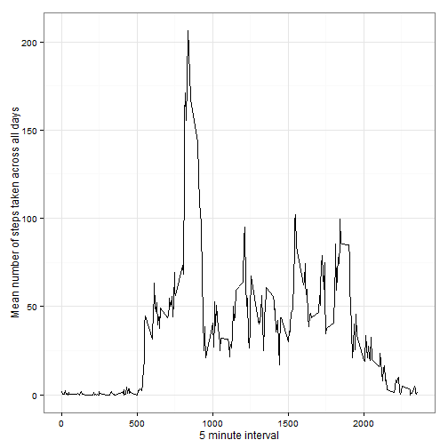
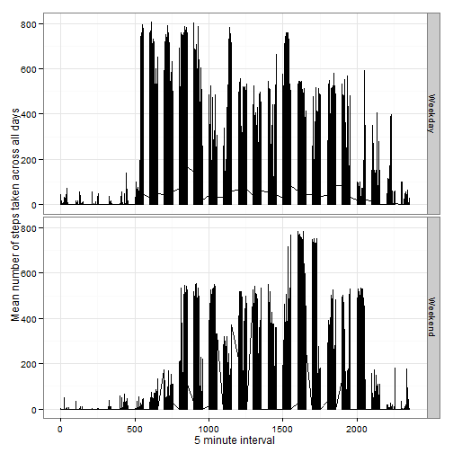

# Summarizing & reshaping data
library(plyr)
library(dplyr)
library(reshape2)
# Plotting data
library(ggplot2)
# Handling dates
library(lubridate)
# Prettyprinting
library(xtable)
library(knitr)
# Set global knitr options to ensure that figures are stored in the _figure_ subdirectory
opts_chunk$set(fig.path='figure/')
Eval 1: Does the submission show code for reading in the dataet and/or processing the data?
Yes, this program uses read.csv to read in the dataset, and lubridate's ymd to translate the "Date" string into a time format.
# Check to make sure the file exists
input_data <- "data/activity.csv"
ifelse(file.exists("data/activity.csv"), "File exists", stop("File doesn't exist"))
## [1] "File exists"
# ... and if it does, read it in
df_activity <- read.csv('data/activity.csv',header=TRUE, as.is=TRUE)
df_activity$date <- ymd(df_activity$date)
Eval 2: Does the submission contain a histogram of the total number of steps taken each day?
Yes, see below.
activity_summary_by_day <- summarise(group_by(df_activity,date), sum(steps), mean(steps), median(steps))
names(activity_summary_by_day) <- c("Date", "TotalStepsPerDay", "MeanStepsPerDay", "MedianStepsPerDay")
ggplot(data = activity_summary_by_day, aes(x=Date, y=TotalStepsPerDay), na.rm = TRUE) + geom_bar(colour="black", stat="identity") + labs(x = "Date", y = "Total number of steps per day") + theme_bw(base_size = 12)
## Warning: Removed 8 rows containing missing values (position_stack).
Eval 3: Are both the mean and median number of steps taken each day reported?
Yes, see below.
kable(activity_summary_by_day)
| Date | TotalStepsPerDay | MeanStepsPerDay | MedianStepsPerDay |
|---|---|---|---|
| 2012-10-01 | NA | NA | NA |
| 2012-10-02 | 126 | 0.4375 | 0 |
| 2012-10-03 | 11352 | 39.4167 | 0 |
| 2012-10-04 | 12116 | 42.0694 | 0 |
| 2012-10-05 | 13294 | 46.1597 | 0 |
| 2012-10-06 | 15420 | 53.5417 | 0 |
| 2012-10-07 | 11015 | 38.2465 | 0 |
| 2012-10-08 | NA | NA | NA |
| 2012-10-09 | 12811 | 44.4826 | 0 |
| 2012-10-10 | 9900 | 34.3750 | 0 |
| 2012-10-11 | 10304 | 35.7778 | 0 |
| 2012-10-12 | 17382 | 60.3542 | 0 |
| 2012-10-13 | 12426 | 43.1458 | 0 |
| 2012-10-14 | 15098 | 52.4236 | 0 |
| 2012-10-15 | 10139 | 35.2049 | 0 |
| 2012-10-16 | 15084 | 52.3750 | 0 |
| 2012-10-17 | 13452 | 46.7083 | 0 |
| 2012-10-18 | 10056 | 34.9167 | 0 |
| 2012-10-19 | 11829 | 41.0729 | 0 |
| 2012-10-20 | 10395 | 36.0938 | 0 |
| 2012-10-21 | 8821 | 30.6285 | 0 |
| 2012-10-22 | 13460 | 46.7361 | 0 |
| 2012-10-23 | 8918 | 30.9653 | 0 |
| 2012-10-24 | 8355 | 29.0104 | 0 |
| 2012-10-25 | 2492 | 8.6528 | 0 |
| 2012-10-26 | 6778 | 23.5347 | 0 |
| 2012-10-27 | 10119 | 35.1354 | 0 |
| 2012-10-28 | 11458 | 39.7847 | 0 |
| 2012-10-29 | 5018 | 17.4236 | 0 |
| 2012-10-30 | 9819 | 34.0938 | 0 |
| 2012-10-31 | 15414 | 53.5208 | 0 |
| 2012-11-01 | NA | NA | NA |
| 2012-11-02 | 10600 | 36.8056 | 0 |
| 2012-11-03 | 10571 | 36.7049 | 0 |
| 2012-11-04 | NA | NA | NA |
| 2012-11-05 | 10439 | 36.2465 | 0 |
| 2012-11-06 | 8334 | 28.9375 | 0 |
| 2012-11-07 | 12883 | 44.7326 | 0 |
| 2012-11-08 | 3219 | 11.1771 | 0 |
| 2012-11-09 | NA | NA | NA |
| 2012-11-10 | NA | NA | NA |
| 2012-11-11 | 12608 | 43.7778 | 0 |
| 2012-11-12 | 10765 | 37.3785 | 0 |
| 2012-11-13 | 7336 | 25.4722 | 0 |
| 2012-11-14 | NA | NA | NA |
| 2012-11-15 | 41 | 0.1424 | 0 |
| 2012-11-16 | 5441 | 18.8924 | 0 |
| 2012-11-17 | 14339 | 49.7882 | 0 |
| 2012-11-18 | 15110 | 52.4653 | 0 |
| 2012-11-19 | 8841 | 30.6979 | 0 |
| 2012-11-20 | 4472 | 15.5278 | 0 |
| 2012-11-21 | 12787 | 44.3993 | 0 |
| 2012-11-22 | 20427 | 70.9271 | 0 |
| 2012-11-23 | 21194 | 73.5903 | 0 |
| 2012-11-24 | 14478 | 50.2708 | 0 |
| 2012-11-25 | 11834 | 41.0903 | 0 |
| 2012-11-26 | 11162 | 38.7569 | 0 |
| 2012-11-27 | 13646 | 47.3819 | 0 |
| 2012-11-28 | 10183 | 35.3576 | 0 |
| 2012-11-29 | 7047 | 24.4688 | 0 |
| 2012-11-30 | NA | NA | NA |
Eval 4: Is there a time series plot of the average number of steps taken (averages across all days) versus the 5-minute intervals?
Yes, see below.
avg_daily_activity_by_interval <- summarise(group_by(df_activity,interval), mean(steps, na.rm=TRUE))
colnames(avg_daily_activity_by_interval) <- c("Interval", "MeanStepsByInterval")
ggplot(data=avg_daily_activity_by_interval, aes(x=Interval, y=MeanStepsByInterval), na.rm = TRUE) + geom_line(colour="black", stat="identity") + labs(x = "5 minute interval", y = "Mean number of steps taken across all days") + theme_bw(base_size = 12)

Eval 5: Does the report give the 5-minute interval that, on average, contains the maximum number of steps?
Yes, see below after the embedded r code.
# First find the max mean steps
max_mean_steps_by_interval <- max(avg_daily_activity_by_interval$MeanStepsByInterval)
# .. then find the interval associated with the max mean steps
df_max_interval <- avg_daily_activity_by_interval[avg_daily_activity_by_interval$MeanStepsByInterval == max_mean_steps_by_interval,]
# .. and cast it to an integer, since intervals are integers
max_interval <- as.numeric(df_max_interval[1,1])
The 5 minute interval with the maximum number of steps: 835.
Eval 6: Does the report describe and show with code a strategy for imputing missing data?
Yes.
Description of strategy for imputing missing data:
1. What was done: Replace missing step values for intervals with the mean of step values over all invervals by day over the entire data set.
2. Why: Use mean over intervals, not days, to avoid imputing a positive number of steps in intervals where no activity usually occurs.
Show with code a strategy for imputing missing data.
complete_count <- sum(complete.cases(df_activity)) # works because FALSE/missing is counted as 0, TRUE is counted as 1
missing_count <- length(df_activity$steps) - complete_count
Note: there are 2304 rows with missing observations.
# Use dplyr so get a full vector to match the one to be replaced
df_activity_group_step_means_by_interval <- df_activity %>% group_by(interval) %>% mutate(mean(steps, na.rm=TRUE))
names(df_activity_group_step_means_by_interval) <- c("steps", "date", "interval", "mean_steps")
# Now replace all the NAs in Steps with the corresponding means across interval
# ... invervals not day because some days son't have any observations at all
# ... means not medians because some intervals have median 0
# First find the NAs in the Steps string
steps_imputed <- df_activity$steps
steps_NA_idx <- which(is.na(steps_imputed)==TRUE)
# get the means to replace the NAs with
activity_means <- df_activity_group_step_means_by_interval$mean_steps
# ... replace them
steps_imputed[steps_NA_idx] <- activity_means[steps_NA_idx]
# ... add finally them back into our original dataset
df_activity <- cbind(df_activity,steps_imputed )
Eval 8. Does the report contain a histogram of the total number of steps taken each day after missing values were imputed?
Yes, see below.
# get means and medians of the steps, both imputed "steps_imputed" and without the imputed values ("steps")
activity_summary_by_day_imputed <- summarise(group_by(df_activity,date), sum(steps_imputed), mean(steps_imputed), median(steps_imputed), sum(steps), mean(steps), median(steps))
# rename the columns to make them easier to deal with
names(activity_summary_by_day_imputed) <- c("Date", "TotalStepsPerDayImputed", "MeanStepsPerDayImputed", "MedianStepsPerDayImputed", "TotalStepsPerDay", "MeanStepsPerDay", "MedianStepsPerDay")
# get the plot
ggplot(data = activity_summary_by_day_imputed, aes(x=Date, y=TotalStepsPerDayImputed), na.rm = TRUE) + geom_bar(colour="black", stat="identity") + labs(x = "Date", y = "Total number of steps per day (imputed)") + theme_bw(base_size = 12)
Calculate and report the mean and median total number of steps taken per day (using the cleaned up data).
kable(activity_summary_by_day_imputed)
| Date | TotalStepsPerDayImputed | MeanStepsPerDayImputed | MedianStepsPerDayImputed | TotalStepsPerDay | MeanStepsPerDay | MedianStepsPerDay |
|---|---|---|---|---|---|---|
| 2012-10-01 | 10766 | 37.3826 | 34.11 | NA | NA | NA |
| 2012-10-02 | 126 | 0.4375 | 0.00 | 126 | 0.4375 | 0 |
| 2012-10-03 | 11352 | 39.4167 | 0.00 | 11352 | 39.4167 | 0 |
| 2012-10-04 | 12116 | 42.0694 | 0.00 | 12116 | 42.0694 | 0 |
| 2012-10-05 | 13294 | 46.1597 | 0.00 | 13294 | 46.1597 | 0 |
| 2012-10-06 | 15420 | 53.5417 | 0.00 | 15420 | 53.5417 | 0 |
| 2012-10-07 | 11015 | 38.2465 | 0.00 | 11015 | 38.2465 | 0 |
| 2012-10-08 | 10766 | 37.3826 | 34.11 | NA | NA | NA |
| 2012-10-09 | 12811 | 44.4826 | 0.00 | 12811 | 44.4826 | 0 |
| 2012-10-10 | 9900 | 34.3750 | 0.00 | 9900 | 34.3750 | 0 |
| 2012-10-11 | 10304 | 35.7778 | 0.00 | 10304 | 35.7778 | 0 |
| 2012-10-12 | 17382 | 60.3542 | 0.00 | 17382 | 60.3542 | 0 |
| 2012-10-13 | 12426 | 43.1458 | 0.00 | 12426 | 43.1458 | 0 |
| 2012-10-14 | 15098 | 52.4236 | 0.00 | 15098 | 52.4236 | 0 |
| 2012-10-15 | 10139 | 35.2049 | 0.00 | 10139 | 35.2049 | 0 |
| 2012-10-16 | 15084 | 52.3750 | 0.00 | 15084 | 52.3750 | 0 |
| 2012-10-17 | 13452 | 46.7083 | 0.00 | 13452 | 46.7083 | 0 |
| 2012-10-18 | 10056 | 34.9167 | 0.00 | 10056 | 34.9167 | 0 |
| 2012-10-19 | 11829 | 41.0729 | 0.00 | 11829 | 41.0729 | 0 |
| 2012-10-20 | 10395 | 36.0938 | 0.00 | 10395 | 36.0938 | 0 |
| 2012-10-21 | 8821 | 30.6285 | 0.00 | 8821 | 30.6285 | 0 |
| 2012-10-22 | 13460 | 46.7361 | 0.00 | 13460 | 46.7361 | 0 |
| 2012-10-23 | 8918 | 30.9653 | 0.00 | 8918 | 30.9653 | 0 |
| 2012-10-24 | 8355 | 29.0104 | 0.00 | 8355 | 29.0104 | 0 |
| 2012-10-25 | 2492 | 8.6528 | 0.00 | 2492 | 8.6528 | 0 |
| 2012-10-26 | 6778 | 23.5347 | 0.00 | 6778 | 23.5347 | 0 |
| 2012-10-27 | 10119 | 35.1354 | 0.00 | 10119 | 35.1354 | 0 |
| 2012-10-28 | 11458 | 39.7847 | 0.00 | 11458 | 39.7847 | 0 |
| 2012-10-29 | 5018 | 17.4236 | 0.00 | 5018 | 17.4236 | 0 |
| 2012-10-30 | 9819 | 34.0938 | 0.00 | 9819 | 34.0938 | 0 |
| 2012-10-31 | 15414 | 53.5208 | 0.00 | 15414 | 53.5208 | 0 |
| 2012-11-01 | 10766 | 37.3826 | 34.11 | NA | NA | NA |
| 2012-11-02 | 10600 | 36.8056 | 0.00 | 10600 | 36.8056 | 0 |
| 2012-11-03 | 10571 | 36.7049 | 0.00 | 10571 | 36.7049 | 0 |
| 2012-11-04 | 10766 | 37.3826 | 34.11 | NA | NA | NA |
| 2012-11-05 | 10439 | 36.2465 | 0.00 | 10439 | 36.2465 | 0 |
| 2012-11-06 | 8334 | 28.9375 | 0.00 | 8334 | 28.9375 | 0 |
| 2012-11-07 | 12883 | 44.7326 | 0.00 | 12883 | 44.7326 | 0 |
| 2012-11-08 | 3219 | 11.1771 | 0.00 | 3219 | 11.1771 | 0 |
| 2012-11-09 | 10766 | 37.3826 | 34.11 | NA | NA | NA |
| 2012-11-10 | 10766 | 37.3826 | 34.11 | NA | NA | NA |
| 2012-11-11 | 12608 | 43.7778 | 0.00 | 12608 | 43.7778 | 0 |
| 2012-11-12 | 10765 | 37.3785 | 0.00 | 10765 | 37.3785 | 0 |
| 2012-11-13 | 7336 | 25.4722 | 0.00 | 7336 | 25.4722 | 0 |
| 2012-11-14 | 10766 | 37.3826 | 34.11 | NA | NA | NA |
| 2012-11-15 | 41 | 0.1424 | 0.00 | 41 | 0.1424 | 0 |
| 2012-11-16 | 5441 | 18.8924 | 0.00 | 5441 | 18.8924 | 0 |
| 2012-11-17 | 14339 | 49.7882 | 0.00 | 14339 | 49.7882 | 0 |
| 2012-11-18 | 15110 | 52.4653 | 0.00 | 15110 | 52.4653 | 0 |
| 2012-11-19 | 8841 | 30.6979 | 0.00 | 8841 | 30.6979 | 0 |
| 2012-11-20 | 4472 | 15.5278 | 0.00 | 4472 | 15.5278 | 0 |
| 2012-11-21 | 12787 | 44.3993 | 0.00 | 12787 | 44.3993 | 0 |
| 2012-11-22 | 20427 | 70.9271 | 0.00 | 20427 | 70.9271 | 0 |
| 2012-11-23 | 21194 | 73.5903 | 0.00 | 21194 | 73.5903 | 0 |
| 2012-11-24 | 14478 | 50.2708 | 0.00 | 14478 | 50.2708 | 0 |
| 2012-11-25 | 11834 | 41.0903 | 0.00 | 11834 | 41.0903 | 0 |
| 2012-11-26 | 11162 | 38.7569 | 0.00 | 11162 | 38.7569 | 0 |
| 2012-11-27 | 13646 | 47.3819 | 0.00 | 13646 | 47.3819 | 0 |
| 2012-11-28 | 10183 | 35.3576 | 0.00 | 10183 | 35.3576 | 0 |
| 2012-11-29 | 7047 | 24.4688 | 0.00 | 7047 | 24.4688 | 0 |
| 2012-11-30 | 10766 | 37.3826 | 34.11 | NA | NA | NA |
Is there a difference of the total daily number of steps?
# Find the day of the week corresponding to the date in yyyy-mm-dd
df_date_weekday_factor <- as.factor(weekdays(df_activity$date))
# Translate day of the week to weekday/weekend, and add it to the df_activity data frame
df_date_week <- ifelse(df_date_weekday_factor=="Saturday"|df_date_weekday_factor == "Sunday", "Weekend", "Weekday")
df_activity <- cbind(df_activity, df_date_weekday_factor, df_date_week)
Eval 9. Does the report contain a histogram of the total number of steps taken each day after missing values were imputed?
Yes, see below.
# Get the mean of the imputed steps by weekday/weekend by date by interval
avg_daily_activity_by_interval_imputed <- summarise(group_by(df_activity,df_date_week, date, interval), mean(steps_imputed, na.rm=TRUE))
colnames(avg_daily_activity_by_interval_imputed) <- c("df_date_week", "date", "interval", "mean_steps_imputed")
# ..and generate the two plots
ggplot(data=avg_daily_activity_by_interval_imputed, aes(x=interval, y=mean_steps_imputed), na.rm = TRUE) + geom_line(colour="black", stat="identity") + labs(x = "5 minute interval", y = "Mean number of steps taken across all days") + theme_bw(base_size = 12) + facet_grid(df_date_week ~ .)
